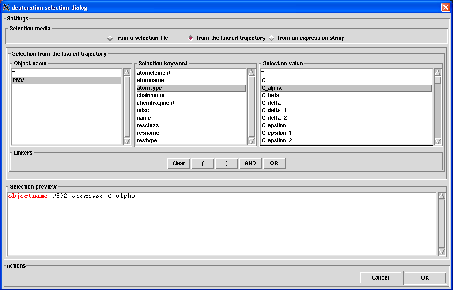

Next: selection from an expression
Up: Deuteration selection
Previous: selection from a selection
Contents
To perform a deuteration selection from the loaded trajectory, you have to click on the from the loaded trajectory
radiobutton. A dialog will be displayed in the underneath frame from which you will construct your selection directly from
the contents of the universe related to the loaded trajectory (see Fig. 4.27).
Figure 4.27:
The deuteration selection dialog for a selection from the loaded trajectory.
|

|
To construct the selection, it is compulsory to proceed in the following order:
- select an object name among the ones displayed in the Object name listbox. This will
display in the Selection keywords listbox the selection keywords associated to the selected object.
- select a selection keyword among the ones displayed in Selection keywords listbox. This will display in the
Selection value listbox the values associated to the selected keyword.
- unselect/select one or several values among the ones displayed in the Selection value listbox.
By doing so, you will construct a selection string with the following format:
objectname name keyword value1,value2, ...
where name is the selected object name (step 1), keyword is the selected keyword (step 2) and
value1,value2,... are the selected values (step 3). This constructed selection string, that will be used by
nMOLDYN, is displayed in the Selection preview entry at the bottom of the dialog with highlighted keywords.
You can associate several selection keywords to a given selected object by repeating steps 2,3. In that case,
the constructed selection string will have the following format:
objectname name keyword1 value1,value2,...OR keyword2, value1,value2,value3...
where the keyword OR will be interpreted by nMOLDYN as an union operator in the sense that it will take the
union between the set of atoms generated by keyword1 value1,value2, keyword2 value1,value2,value3 ...
You can also include several objects in the selection by repeating steps 1,2,3. In that case, the constructed selection
string will have the following format:
objectname name1 keyword1 value1,...OR keyword2, value1,value2, ...OR objectname name2 keyword1 value1 ...
Finally, using the buttons within the Linkers frame each time a step 3 is completed allows to construct more complex selection strings using the
(, ), AND, OR linkers, the AND linker acting as an intersection operator while the
OR link, described above, acts as an union operator. The button Clear clears up the selection string under construction.
The table 4.1 lists the selection keywords and values depending on the MMTK type of the object being processed.
Next: selection from an expression
Up: Deuteration selection
Previous: selection from a selection
Contents
pellegrini eric
2009-10-06